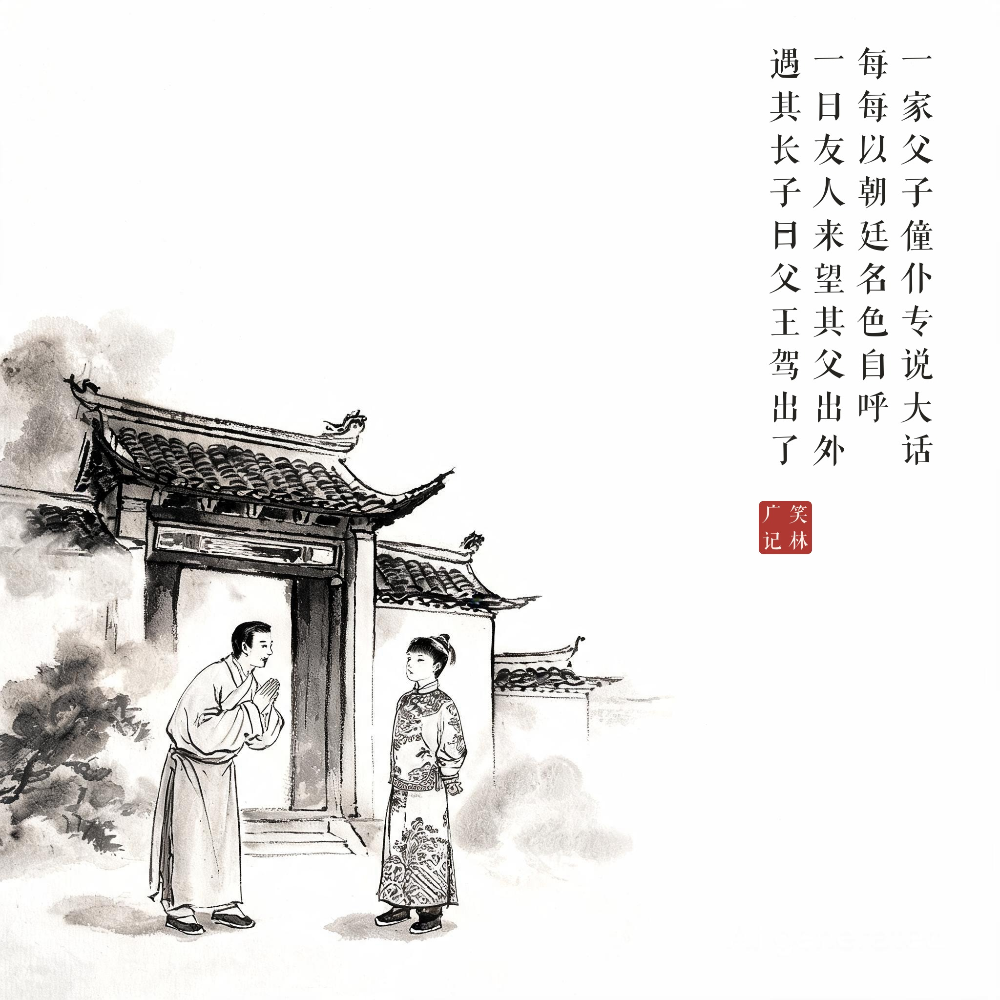
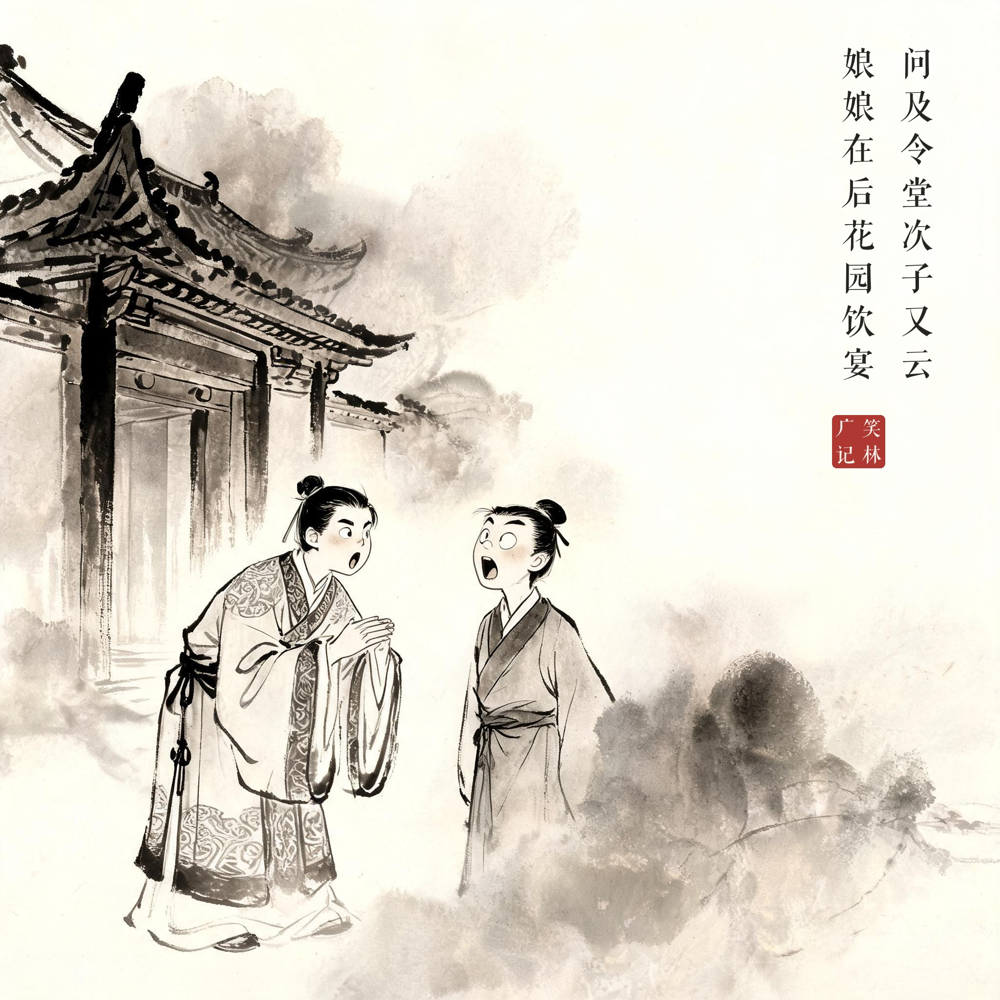
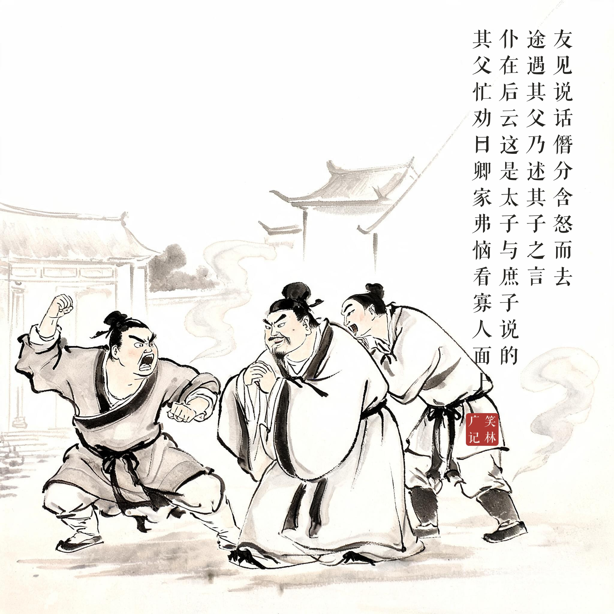

《笑林广记 · 谬误部》（[清]游戏主人纂集）
一家父子僮仆，专说大话，每每以朝廷名色自呼。一日，友人来望，其父出外，遇其长子，曰："父王驾出了。"问及令堂，次子又云："娘娘在后花园饮宴。"友见说话僭分，含怒而去。途遇其父，乃述其子之言告之。父曰："是谁说的？"仆在后云："这是太子与庶子说的。"其友愈恼，扭仆便打。其父忙劝曰："卿家弗恼，看寡人面上。"
一家父子僮仆都爱说大话，都以朝廷名号互称。一天朋友来访，父亲不在，长子说："父王出宫了。"问起女主人，次子说："娘娘在后花园饮宴。"朋友一听这都僭越了，含怒告辞。半路遇上父亲，学说了一遍。父亲问："谁说的？"仆人在后头搭腔："是太子和庶子说的。"朋友火更大了，揪住仆人就打。父亲忙劝："卿家莫恼，看寡人面上。"
一家人戏演到散场收不住，连劝架都自称寡人——僭越的最高境界是全家入戏。